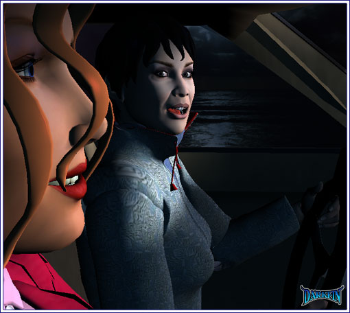
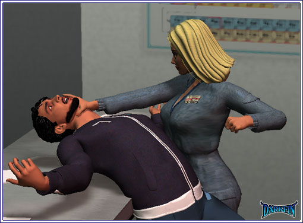
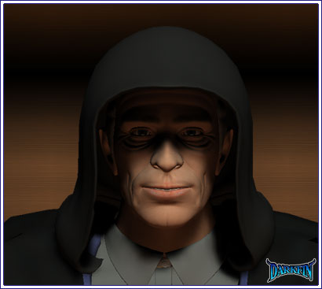
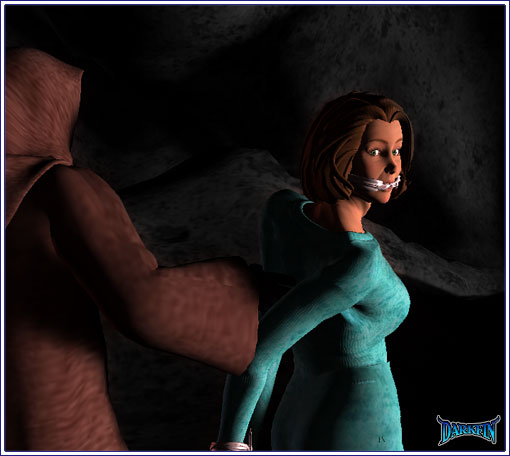

Gracie Unbelievable
Kylee (Opening up some gum) Karl Sr. was on the young side of old but he was still old - back in Alabama, they drop like flies at his age

Gracie That's because two-thirds of their bodies are made up of lard and tobacco
Kylee Occasionally, we'll have the one that lives to 112 but that's always on the side of the family we can't stand - I remember this great uncle...
Gracie Let me stop you here - my original, guttural remark of "unbelievable" was meant to be a general, throw-away comment that was nothing more than an observation of this day's complete insanity... not a set-up for sharing Shepperton family incest moments
Kylee Would you like a piece of Dentyne?
Gracie (Sighing and taking the gum) Thanks
Kylee No, thank you - especially the way you slurped up those little onion quiches
Gracie (Gritting her teeth) I didn't have any lunch
Kylee I wonder what makes people think the way they do? - my husband just died, maybe I should put out some onion quiche?
Gracie I highly doubt Mrs. von Meer was the one doing the cooking - they have, what, a dozen servants or something?
Kylee That's true
Gracie I feel really bad for KJ, I've never seen him so devastated - and I feel like crap for intruding on his family's privacy
Kylee He should be glad that we were assigned this story, we were very respectful of all the von Meers
Gracie Good God, I actually agree with you - what is going on today?
Kylee It's just too bad Erika is such a disappointment
Gracie Huh?
Kylee It's not right that she's not married with kids by now - poor Karl went to his grave without being a granddaddy - that's a sin where I come from!
Gracie Remind me to never go there
Kylee I'm serious
Gracie Um, we're around the same age and neither one of us is married with offspring?
Kylee Don't remind me... at least I'm trying to do something about it - thankfully, my step-sister just gave birth to her fourth so the pressure is off of me for now
Gracie How come you're singling out Erika? - why not KJ?
Kylee Because, it's more acceptable for him to be a playboy bachelor with his money and looks - but for Erika, with her breeding and beauty, she doesn't have to struggle in a thankless job like we do
Gracie I kinda like my career
Kylee That is not the point - the point is she should be married to Griffin, having his children, keeping the family business and the bloodlines growing - not playing around with sea urchins
Gracie Did Martel give you that sound bite while you were giving him head in the bathroom?
Gracie Uh-huh... so, Erika can't play with fish but it's okay for guys like KJ and Griffin to play around with bunnies?
Kylee What?
Gracie I don't know... I'm tired and confused
Kylee I know KJ is sweet on our little outlaw McBride but I have no doubt with all the ladies in his past that there's an illegitimate nest in his tree somewhere
Gracie You know, I have enough problems with my own personal life, I don't even want to venture a guess with his
Kylee Ooh, someone sounds like she needs to talk!
Gracie Oh God, why did I speak to her, why, why?
Gracie Here, take your gum back
Kylee Okay then, nevermind, I was just trying to be friendly
Gracie Ugh... I really need to talk to someone about this - why does it have to be you?
Kylee Hello there, my camerawoman-slash-segment producer can't talk to me about something - it's most likely something sexual - do you think you could talk to her instead?
Gracie This day has to end, this day has to end soon
Kylee Not for us, we have another assignment for 11:00
Gracie We just have to do a quick follow-up on the quake - I figure we'll get a shot of you straddling the huge new crack in the valley floor
Kylee Why not get a shot of me in front of some damaged buildings?
Gracie Everyone is doing damaged building shots - besides, people love to see you straddle, ratings go up
Kylee But it's dark outside?
Gracie You forget, you are in the presence of the Queen of Lighting - how do you think I get your damaged hair to look so soft?
Kylee That's right, I'm with Takanachi the frustrated artiste - Good Lord, Gracie, it's a two-minute package featuring dirt!
Gracie Fine, we'll do a damaged building shot, let's get this over with
Kylee WAIT... I'm sorry - let's do the crack, I wanna do the crack with you!
Gracie (Wiping the tears from her eyes) Oh, I so need that - that was funny for no real reason - so we're sticking to the original plan?
Kylee Yes, take as long as you need... I'm not too keen on rushing home
Gracie Christ, we're back to the girl talk again... what's wrong at home?
Kylee I just don't want to go - Turner has been acting strange lately
Kylee Even more so than usual - he's been disappearing in the middle of the night
Gracie Um, he does have a wife and kids
Kylee They mean nothing to him... I dunno, these last few days especially, it's as if something is in the air
Gracie Start singing Phil Collins and I'll smack you
Kylee I'm glad work has been keeping me busy
Gracie Nothing beats the misfortune of others to distract us from our own
Kylee I just don't want to go home tonight - is that so wrong?
Gracie No... I know the feeling, believe me - if you want, we can split a room at the Holiday Inn
Kylee Eww, I was thinking more along the lines of the Del Pilar
Gracie Maybe YOU can afford that!
Kylee So, are you ready to tell me yet?
Gracie Tell you what?
Kylee The reason why you don't want to go home?
Gracie (Taking a deep breath) I slept with Clark
Kylee Clark who?
Gracie OUR Clark, Jason Clark
Kylee (Shrieking) OH MY GOD
Gracie See? - that's why I didn't want to tell you
Kylee HOW COULD YOU?
Gracie AT LEAST FAKE SOME SUPPORT
Kylee That's just wrong!
Gracie PLEASE
Kylee Of all the guys to pick from, why did you do the nasty with him?
Gracie I honestly don't know
Kylee Was he good?
Gracie I don't remember
Kylee Why, you dirty tramp!
Gracie Hello, Kettle, will you accept a collect call from Pot?
Kylee I, at least, remember mine
Gracie I didn't know the human brain could count beyond a million?
Kylee I've never done it with a man of color before
Gracie You mean to tell me Turner is an albino? - what about the other 2000 a month?
Kylee Enough with the jokes, Gracie, I set standards for myself
Gracie What century are you living in, Shepperton? - more importantly, what color am I?
Kylee Everyone considers Orientals to be honorary white folk in this country
Gracie Dear God... and just when I was beginning to slightly like you
Kylee Looks like someone else is after our crack
Gracie Mirabello, do you know where Zach is? - I have been looking...
Joenne GET BACK IN THE VAN - GO, GO, GO
Gracie WHAT THE HELL?
Kylee (Running back to the van) Let's go with the damaged building idea, Gracie!
Joenne TAKE MY SISTER WITH YOU
Justine NO, JOEY
Joenne I have backup coming for me - I can hold them off - you three need to get outta here, NOW
Gracie What is going on here?
Justine I'M NOT LEAVING YOU...
Gracie Can you teach me how to do that to my parents?
Joenne Sorry, Justi - GRACIE, KYLEE, GET HER IN THE VAN AND LEAVE, GOD DAMMIT
Gracie (Calling after) DOES KCON GET AN EXCLUSIVE WITH YOU?
Gracie (Pounding the gas pedal) WE'RE LEAVING, WE'RE LEAVING, WE'RE SO LEAVING...I HATE THIS DAY
Shelby I really need to be picking up Calvin - I'll see you two tomorrow
Shelby Please go home and be with your family, get some rest
Erika Not until I find out what I need from Sandy
Javier What is it that you need, Rikka?
Javier (Taking her hand and kissing it) I am so sorry about your father
Erika (Snatching her hand away) Are you?
Javier What does that mean?
Erika Could you please take a look in the electron microscope for me?
Javier What is it?
Erika (Choking back the rage) TAKE A LOOK
Javier (Stunned) WHERE DID YOU GET THIS? - HAVE YOU BEEN GOING THROUGH MY FILES?
Erika So you HAVE been working on this!
Javier Look, just because we're all in the same department doesn't mean we need to be a part of each other's projects - you have tons of experiments going on that you keep me, Shel and Tim out of the loop on
Erika (Cool) Who hired you to work on this?
Javier How dare you? - it's a personal venture that I...

Erika I'm not going to ask you again, Sandy
Javier WHAT... IN THE HELL... IS WRONG WITH YOU?
Erika Your little personal venture is hurting someone I love
Javier Who is it hurting? - I don't understand - I think you're overreacting because of your dad
Erika EXACTLY - I need to isolate this toxin quickly and find an antidote - I can do it on my own but it will take too much time... help me or I will make it very ugly for you and your family
Javier I don't understand where any of this is coming from - he said it was supposed to be for a cosmetics agent
Erika WHO, WHO IS HE?
Javier Griffin!
Joe I cannot ignore it any longer... forgive me, my Lord, for I have been a coward far too long!
Joe (Tying it around his neck) Time is running out for everyone

Joe (Pulling the hood over his head) Pray for us, Deirdre
Morrigan AMY
Amethyst I'm sorry...

White Robe You did well, my child
Amethyst (Flinching) I hate you for making me do this
White Robe Ultimately, it was your decision, wasn't it?
Amethyst Let Zach go, now!
White Robe Not until the Marked One fulfills her purpose
Amethyst I brought her to you now give me Zachary
White Robe Our deal will be completed soon - you are more than welcome to watch
White Robe Do not test my patience right now
Amethyst I WILL COME BACK FOR HER... once I take care of Zach, I promise you this!
White Robe Don't waste your energy, I highly doubt she will survive the ritual
Morrigan (Slipping out of her gag) ZACH, ZACH
Zach (Muffled) MORRI?
Morrigan GET DARKFIN...
Zach WHO?
Amethyst ZACH - oh, my baby, I'm so sorry - are you okay?
Zach Amy? - is that you?
Zach What the fuck is going on here?
Amethyst Shh, relax... can you walk?
Zach I think so - why are you dressed like that? - hey, I'm really sorry about the donkey prank at your birthday party last year but this goes way beyond payback!
Amethyst This is not a joke
Zach Did I hear Morrigan? - is she here? - who are these psychos?
Amethyst (Whispering) Don't say another word, just be ready to run
Zach But...
Zach Not another earthquake!
Amethyst (Tears running down her face) No... not an earthquake
Zach What's that chanting?
Amethyst They have begun the invocation too soon, it will bring even greater disaster upon us
Zach HOW DID YOU...
Amethyst WE HAVE TO GET OUT OF HERE NOW
Zach WHAT ABOUT...
Amethyst (Taking Zach's hand and pulling him) RUN
White Robe CARRY HER
White Robe LET THE MARK LEAD US
White Robe (Uncontained glee) WE ARE NEAR, WE ARE VERY NEAR
Morrigan Fin...
White Robe Aleta Oscura isn't here to save you this time, child
White Robe HERE, WE SHALL DIG HERE
Blue Robe But the timing, Master - the timing is slightly off
White Robe I AM DONE WAITING - IT IS NOW MY TIME
Joe (Eyes glowing) IT IS NOW YOUR TIME... YOUR TIME TO DIE